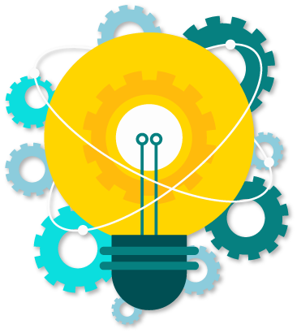
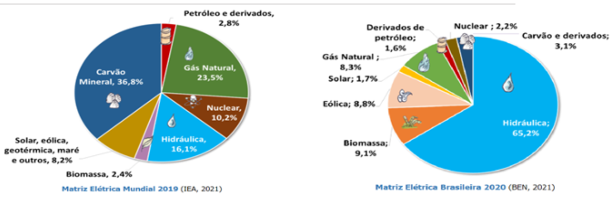
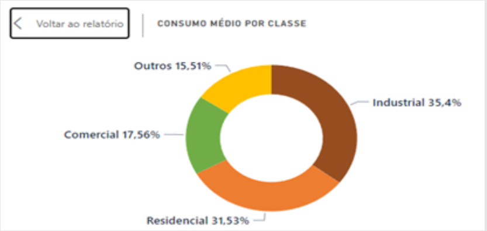
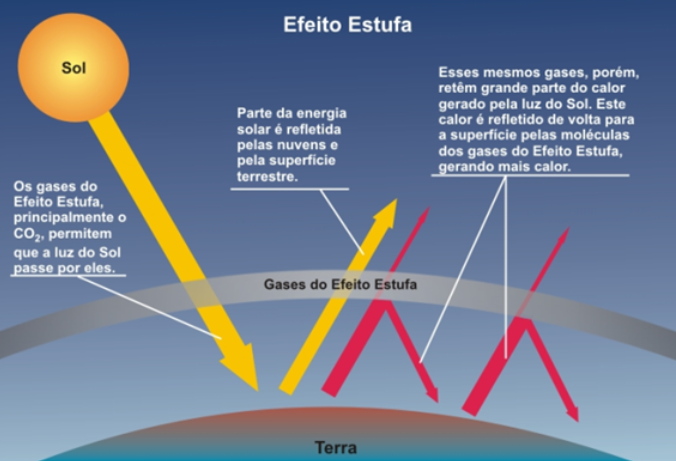

Olá, estudante do Sesc EAD EJA! Seja bem-vindo à área de Ciências da Natureza. Confira agora o que você vai aprender neste módulo.
Vamos compreender como a energia elétrica é crucial em nossas vidas, entendendo um pouco sobre os conceitos básicos, bem como sobre os dispositivos que fazem parte da rede elétrica.
Juntos, vamos analisar os equipamentos presentes em nossas casas, nos quesitos consumo, eficiência e segurança.
Além disso, vamos visitar os tipos de geração de energia elétrica, seus impactos e como é feita a cobrança de energia aos consumidores finais, que somos todos nós.
Por fim, buscaremos reflexões acerca da geração de energia e do consumo da sociedade.
Siga conosco nesta caminhada!
Até a próxima!

A vida humana é pautada por diferentes necessidades, tais como: dormir, respirar e, como visto nos estudos até aqui, se alimentar. Esses atos são tão naturais que não são percebidos no dia a dia. Pense em quando falta água ou eletricidade na sua casa: enquanto esses serviços estão disponíveis, não se nota sua existência, mas, na falta deles, a vida se torna caótica. Não há energia elétrica para aquecer o banho, para iluminar as residências nem para utilizar equipamentos eletrônicos, como carregadores de celular, por exemplo.
Desde os primórdios, o ser humano, questiona, problematiza e debate diversos temas, entre eles, a eletricidade, responsável por tantas facilidades na contemporaneidade.

A história da eletricidade teve origem na Grécia Antiga, no século VI a.C., quando o filósofo Tales de Mileto descobriu uma resina vegetal fossilizada chamada âmbar, a esfregou em peles de animais e observou a atração de objetos leves, como palha, lascas de madeira e penas.
A pesquisa de Tales foi continuada por várias pessoas, como William Gilbert, que, em 1600, chamou esses diferentes corpos que se atraíram de corpos elétricos.


Em 1730, o físico britânico Stephen Gray descobriu que, além de carregar objetos por fricção (atrito), eles também podem ser carregados por contato (colocando um objeto carregado em contato com um objeto neutro).
A partir dessas observações, Gray desenvolveu o conceito da existência de materiais que conduzem eletricidade com eficiência ou que dificultam a passagem de eletricidade e os chamou de condutores elétricos e isolantes, respectivamente. Com isso, Gray viu a possibilidade de transportar eletricidade de um corpo para outro.

Figura 1 – História da eletricidade
Fonte: Sesc EJA EAD (2022)
Quando dois materiais de diferentes composições são atritados, um perde elétrons para o outro. Esse processo é chamado de eletrização por atrito triboelétrica. O processo de eletrização envolve a criação de um desequilíbrio no número de e em qualquer objeto. Existem três maneiras possíveis de eletrizar um corpo: por atrito, contato e indução.
PRÓTONS: Partículas que compõem o átomo, são naturalmente imóveis, ficam no centro do átomo e, ao contrário dos elétrons, são carregados de carga elétrica positiva (p+). No centro (núcleo) do átomo, junto aos prótons, há outra partícula sem carga elétrica, chamada nêutron.
ELÉTRONS: É uma das partes que compõem o átomo que, por sua vez, é uma parte que compõe tudo que é matéria. Os elétrons no átomo são a parte carregada de energia negativa, assim como são a parte móvel do átomo, que se movimenta para interagir com outros materiais, e esse movimento acontece na eletricidade. Você estudará as partes do átomo e suas interações mais adiante.
GIF

É possível verificar esse conceito de eletrização por atrito atualizando o experimento realizado por Tales de Mileto, com a utilização de um pente e papel picado. Conforme mostra a animação, passe o pente em seus cabelos ou em um casaco de lã e, em seguida, aproxime-o dos papéis picados. Você observará que os pedacinhos de papel se aproximam do pente.
Por desequilíbrio no número de prótons (partículas carregadas positivamente) e elétrons (partículas com carga elétrica negativa), fazendo com que haja uma atração entre os objetos, pois objetos com cargas diferentes se atraem. É exatamente o que diz no ditado popular “os opostos se atraem”.
Observe a figura a seguir e compreenda como é possível essa aproximação entre os objetos.
GIF

A energia elétrica é transportada e utilizada para realizar grande parte das atividades do dia a dia, tais como:
Clique na imagem para ampliá-la.

Figura 2 – Uso de energia elétrica no dia a dia
Fonte: Sesc EJA EAD (2022)
É difícil pensar em viver sem energia elétrica. Você já imaginou como seria a sociedade se a energia elétrica nunca tivesse sido descoberta? Provavelmente, muito do que existe hoje jamais teria sido inventado e a percepção sobre o mundo também seria diferente.
Todavia a energia elétrica existe e traz muitos benefícios, mas a sua existência e a necessidade de economizar só são percebidas quando a conta de luz chega todos os meses. Apesar de onerar o orçamento, é necessário pagar pelo serviço consumido.

Mas como as empresas de energia conseguem saber exatamente o que é consumido?
Para responder a essa pergunta, é preciso entender como a energia elétrica funciona nas residências.
Para funcionar, cada aparelho elétrico precisa ter seus terminais ligados à tomada da rede elétrica. A tomada elétrica, por sua vez, fica ligada ao quadro de distribuição. Esta, então, se liga à caixa central (conhecida como padrão). Finalmente, a caixa padrão se liga a toda a rede de distribuição da companhia elétrica.
Observe, a seguir, uma animação com um exemplo de ligação residencial.
GIF
Os fios da rede de distribuição de energia que vêm pelas ruas chegam à caixa de entrada, e nesses fios existe o que chamamos de tensão ou d.d.p. diferença de potencial. É ela que força o movimento dos elétrons. A unidade de medida da tensão é volts ou simplesmente V.
O movimento dos elétrons segue um fluxo ordenado, como se fosse uma correnteza de um rio, cujo nome é corrente elétrica, e sua unidade de medida chama-se ampere ou simplesmente A.
GIF
Tensão é o que força o movimento dos elétrons através dos condutores. Como a corrente precisa ir de um ponto a outro, são necessários dois fios. Em uma rede de 127V de tensão, um dos fios é chamado fase e o outro neutro (em alguns lugares do Brasil, a rede pode ser 220V), ou seja, os elétrons viajam da fase para o neutro, percorrendo o caminho pelo aparelho conectado à tomada. Em instalações adequadas, os diferentes circuitos (banheiro, sala, quarto) são separados e cada um tem seu disjuntor de proteção no quadro de distribuição. Os dois fios, fase e neutro, são levados a todos os cômodos da casa.

Sistema que facilita a passagem da corrente elétrica em caso de fuga de energia. Seu principal objetivo é evitar o choque elétrico, levando a corrente diretamente para a terra.
Equipamento que protege os circuitos e os equipamentos de uma corrente excessiva. Em caso de curto surto, ele desarma e corta o fluxo da corrente elétrica.
Cada tomada e cada lâmpada estão ligadas ao quadro de distribuição, em uma configuração denominada circuito paralelo. Nessa configuração, cada aparelho pode funcionar de forma independente dos demais, pois tem um circuito particular ligado diretamente aos fios da rede elétrica que chegam até o padrão.
Um dos fenômenos da corrente elétrica é o aquecimento. Isso significa que parte da energia é transformada em calor. Todas as correntes elétricas se somam em algum ponto da malha de condutores. Nesse exato lugar, podemos calcular a corrente total. Sabendo essa informação, podemos dizer qual é o disjuntor ideal, bem como qual é o tipo de cabo certo que devemos usar. Essas informações são quesitos de segurança essenciais, que previnem acidentes.
Naturalmente, quanto mais aparelhos forem ligados à tomada, maior será a corrente total que passa pelos disjuntores do quadro de distribuição. No momento da construção de uma casa, devem ser previstos os tipos de aparelho que serão instalados, para que os dispositivos de proteção sejam adequadamente dimensionados e, com isso, seja possível evitar o superaquecimento dos fios e prevenir acidentes. Isso vale também para a utilização de extensões elétricas.
O uso de extensões elétricas faz com que se excedam os limites dos equipamentos, aumentando a corrente total e, como consequência, aumentando o consumo e o calor gerado pelo fluxo de energia.
É comum a utilização de extensões com muitas tomadas para ligar diversos aparelhos, mas isso deve ser feito com cautela. Equipamentos como aparelhos de TV e de DVD, carregadores de celular, notebooks e impressoras funcionam com correntes elétricas baixas. Portanto, ligar vários desses aparelhos a uma extensão não gera problemas (desde que não seja excedido o limite de corrente especificado pelo fabricante na extensão). Por outro lado, aparelhos como forno de micro-ondas, ferro elétrico de passar roupas, secador de cabelo e aspirador de pó, que requerem correntes altas para seu correto funcionamento, não devem ser ligados nesse tipo de dispositivo, pois pode ocorrer superaquecimento dos terminais da extensão e, consequentemente, um incêndio.
Todas as informações sobre tensão de funcionamento, corrente elétrica e potência estão descritas nos aparelhos, sejam em decalques ou adesivos. Essas informações são importantes para a correta instalação dos aparelhos em suas tomadas, garantindo seu funcionamento com segurança.
Clique na imagem para ampliá-la.
Figura 3 – Selo de Eficiência Energética
Fonte: Blog Explicaê (2021)
O conhecimento desses dados possibilita que o consumo elétrico dos equipamentos seja previsto. A concessionária de energia, empresa que fornece energia na sua região, instala equipamentos no seu padrão de entrada. Esse equipamento mede a potência consumida por um determinado tempo, chamado de kWh, quilowatt-hora. Verifique um cálculo de consumo a seguir.
Clique na imagem para ampliá-la.
Exemplo:
Imagine que uma lâmpada tenha a seguinte descrição em seu corpo:
| Potência | 15 W |
| Fluxo luminoso | 1500 Im |
| Tensão | 100 – 250 V |
| Frequência | 50/60 Hz |
Agora, suponha que a lâmpada foi instalada na sala de estar e fica ligada diariamente por, pelo menos, oito horas. Com essas informações, é possível calcular seu consumo.
Utilize a calculadora para solucionar o exemplo.
Clique para calcular o consumo mensal
Resolução do exemplo:
Clique na imagem para ampliá-la.

A lâmpada consome 3,6 kWh por mês.
O cálculo até aqui conseguiu medir a potência consumida individualmente de cada aparelho em sua residência. Ao somar todos os consumos, é obtido o montante total que, por sua vez, deve ser cobrado em reais (R$). Em cada região do país, existe uma empresa diferente, que fornece a energia em sua unidade consumidora. Em geral, elas têm dois valores nas contas para cada quilowatt-hora consumido.
| Unidades com prefixo | Equivalência em watts |
|---|---|
| 1 kW = 1 Quilowatt | 1.000 watts |
| 1 MW - 1 Megawatt | 1.000.000 watts |
| 1GW = 1 Gigawatt | 1.000.000.000 watts |
O cálculo até aqui conseguiu medir a potência consumida individualmente de cada aparelho em sua residência. Ao somar todos os consumos, é obtido o montante total que, por sua vez, deve ser cobrado em reais (R$). Em cada região do país, existe uma empresa diferente, que fornece a energia em sua unidade consumidora. Em geral, elas têm dois valores nas contas para cada quilowatt-hora consumido.
Nesse momento, a concessionária de energia realiza a leitura do equipamento que mediu o consumo de energia elétrica. Essa medida é multiplicada pelo valor do kWh do TE e do TUSD. Por fim, a soma dos dois produtos fornece o montante da fatura a ser paga, como demonstra a imagem a seguir:
Clique na imagem para ampliá-la.
Figura 4 – Conta de energia elétrica
Fonte: Neoenergia Pernambuco ([s.d.])
Segundo a conta de luz demonstrada na figura, o consumo dessa residência foi de 286 kWh. Esse número foi multiplicado pelo TE, cujo custo é de R$ 0,34189370, totalizando R$ 97,78. O consumo também foi multiplicado pelo TUSD, cujo custo é de R$ 0,48009528, totalizando R$ 137,30. A soma dos dois valores é o montante total da fatura, nesse caso, R$ 235,08.
Algumas empresas aglomeram as tarifas ou acrescentam outras cobranças, como iluminação pública e perdas no sistema. Os desvios de energia, também conhecidos como “gatos” na cultura popular, acabam sendo pagos por outras pessoas na categoria de perdas de energia. Essas irregularidades são um risco para a segurança das residências, pois são ligações ilegais, feitas sem segurança, correndo o risco de danificar equipamentos ou até causar um incêndio.
As tarifas podem variar de acordo com a bandeira de geração de energia. Conforme as condições de geração de energia elétrica no país, a bandeira pode ser verde, amarela e vermelha.
Passe o mouse ou toque para acessar o conteúdo.
Condições favoráveis de geração de energia, sendo assim, não há cobrança.
Condições menos favoráveis de geração de energia, sendo cobrados RS 2,92 a cada 100 kWh.
Condições desfavoráveis, sendo cobrados R$ 6,23 a cada 100 KWh.
Condições muito desfavoráveis, sendo cobrados R$ 9,33 a cada 100 kWh.
Pesquise, na conta de energia de sua residência, como é efetuada a cobrança na sua região. Compare com os conceitos vistos até aqui. Pesquise as notícias sobre aumentos nas contas de energia. Essa dica de pesquisa não é avaliativa.
Você viu até aqui o funcionamento da energia em sua residência. Mas como ocorre a geração de energia elétrica no Brasil? É o que será visto em seguida.
O termo energia remete sempre à eletricidade, porém os estudos anteriores mostram que não é apenas essa forma de energia que existe. Você aprendeu que existe a energia que vem dos alimentos (também conhecida como energia química), a cinética (energia que um objeto adquire por estar em movimento) e a energia térmica (energia oferecida aos alimentos ao cozinhá-los).
De acordo com a famosa frase de Antoine-Laurent de Lavoisier, apresentada por Carlos Pianceli: “Na natureza, nada se cria, nada se perde, tudo se transforma”, toda energia pode ser transformada. Todas essas transformações podem ser usadas para gerar e transmitir energia elétrica.
A capacidade de converter outras formas de energia em energia elétrica mudou profundamente a sociedade. Seja o despertador usado para acordar de manhã ou os robôs das indústrias, todos eles dependem de eletricidade. Compreender a transição da energia e seu impacto no dia a dia proporciona uma reflexão sobre o uso consciente da eletricidade, a fim de desenvolver recomendações para geração, transmissão e distribuição de eletricidade favoráveis ao desenvolvimento.
Assista ao vídeo a seguir sobre a matriz energética no Brasil.
A demanda por energia elétrica é cada vez maior, e você, inclusive, já deve ter notado quantas atividades faz com a ajuda da eletricidade. Os eletrônicos que usamos diariamente e a maioria das máquinas e dos equipamentos da indústria requerem eletricidade para funcionar.
Matriz energética é um conjunto de fontes de energia ofertado no país para captar, distribuir e utilizar em diferentes setores comerciais, industriais e residenciais. A matriz elétrica brasileira, em 2017, era composta de 65,2% de energia vinda de fontes hidráulicas, ou seja, de toda a produção de eletricidade brasileira, a maior parte provém de hidrelétricas. Quando comparamos nossa matriz elétrica com a do restante do planeta, vemos que nosso percentual de uso de energia hidráulica equivale ao uso mundial de carvão, petróleo e gás natural para a geração de energia elétrica.
Matriz elétrica
Fonte: Empresa de Pesquisa Energética ([s.d.])
A matriz energética do Brasil nos mostra de que fonte a eletricidade pode ser gerada, mas também podemos entender de que maneira essa energia elétrica é utilizada. Com dados de 2020, temos um relatório da Empresa de Pesquisa Energética (EPE), que disponibiliza informações do consumo de energia elétrica nacional e regionalmente, além de separar as classes em residencial, industrial, comercial e outros (rural, de serviço público e de iluminação pública).
Consumo médio por classe
Fonte: Empresa de Pesquisa Energética (2023)
O consumo de energia varia muito e, como podemos ver, as residências de todos nós ocupam menos de um terço de toda produção de eletricidade. Mesmo assim, em tempos de crise, todas as campanhas de uso consciente e de racionamento da energia se voltam pro para o consumidor comum.
Consumo acumulado por região em GWH
Fonte: Empresa de Pesquisa Energética (2023)
Podemos ver também, utilizando os dados do mesmo relatório, que as regiões geográficas do Brasil consomem a energia em quantidades bem diferentes. O Sudeste, com uma concentração populacional e industrial muito maior que as outras regiões, consome metade da eletricidade produzida no território nacional.
Uma usina hidrelétrica armazena por meio da gigantesca quantidade de água presente no reservatório. Para o reservatório existir, há a necessidade de represar o rio e/ou outros cursos-d'água. Porém o fluxo regular do rio é alterado ou, até mesmo, interrompido, fazendo com que a água inunde as áreas do entorno, formando um imenso lago artificial. Essa inundação causa grandes impactos ambientais e sociais. Espécies da fauna que vivem nas regiões inundadas precisam ser removidas de seus habitats, e a flora fica submersa na água, emitindo grandes quantidades de metano, gás carbônico e óxido nitroso. Há casos em que cidades inteiras são inundadas e as comunidades que viviam nessas regiões têm de ser realocadas, perdendo parte de sua memória e de suas raízes. Mesmo se tratando de uma energia renovável sem emitir diariamente os gases do efeito estufa, como em outras formas de geração de energia, as hidrelétricas têm seus impactos ambientais e sociais, principalmente em sua elaboração e construção.
Energia potencial gravitacional: Energia de um corpo que está a uma determinada altura. Quanto maior a altura, maior a energia armazenada.
Clique ou toque nas etapas para conhecer o funcionamento de uma usina hidrelétrica.
Figura 5 – Esquema de funcionamento de uma usina hidrelétrica
Fonte: Sesc EJA EAD (2022)
1. Barragem - Represa e armazena a água para a produção da energia elétrica.
2. Reservatório - O funcionamento começa pelo reservatório. Quanto mais cheio o reservatório estiver, mais energia potencial será capaz de se transformar em energia cinética.
3. Turbina - A turbina, que está acoplada ao gerador, gira devido à velocidade da vazão da água.
4. Gerador - O gerador movimenta os elétrons, criando uma corrente elétrica. Estes passam pelos transformadores.
5. Transformador - O transformador aumentará a tensão de modo que a energia elétrica possa percorrer grandes distâncias.
6. Transmissão - Represa e armazena a água para a produção da energia elétrica.
7. Fios condutores - Para que a eletricidade chegue às residências, é necessário que ela siga o caminho através dos fios condutores.
Condutores: Condutor é o nome dado a todo material que tem facilidade em transportar elétrons. Os principais condutores sãos os metais, tais como: cobre, alumínio e ferro.
Você acha que todas as formas de geração de energia geram impacto no meio ambiente e/ou na sociedade? Na sua opinião, como seria possível diminuir os efeitos de uma futura construção de barragem de usina hidrelétrica em uma comunidade que vive às margens do rio?
Observe, a seguir, uma das maiores usinas hidrelétricas do mundo, a Itaipu:
Clique na imagem para ampliá-la.
Figura 5 – Usina de Itaipu
Fonte: Marinho (2020)
A Usina Hidrelétrica de Itaipu fica localizada na divisa entre o Brasil e o Paraguai. Foi a maior represa até o ano de 2003, perdendo seu título para a Usina Hidrelétrica das Três Gargantas, na China.
Além dos impactos ambientais citados anteriormente, outro grande problema desse tipo de geração é a dependência das chuvas. Fenômenos climáticos, como o , por exemplo, afetam o volume de chuvas, que, por sua vez, afeta o volume de água armazenada, que, por fim, afeta a quantidade de energia elétrica produzida. Entre as soluções para manter a demanda está o aumento da tarifa, conforme mencionado anteriormente, além disso, a construção de novas usinas e o aumento do uso de outras fontes de energia, que será visto a seguir.
Pesquise sobre a Usina de Belo Monte e descubra qual será sua capacidade de geração de energia elétrica, bem como as notícias sobre os conflitos envolvendo as questões ambientais.
Conforme visto anteriormente, a água e os recursos hídricos, em geral, são necessários à geração de energia, principalmente ao se tratar do Brasil, onde 65,2% da fonte energética provêm de hidrelétricas. Porém, além de sua importância na geração de energia elétrica, a água também é essencial à vida do planeta como um todo, e sua escassez é um problema não só energético, mas global. A população e as cidades estão em constante crescimento, o que aumenta também a demanda de energia, como um círculo vicioso. Com isso, alternativas são buscadas em períodos de escassez de água, como as termelétricas.
As termelétricas são responsáveis pela maior parte da matriz energética mundial, e no Brasil representam em torno de 13%.
Uma usina termelétrica, como o nome propõe, gera energia elétrica a partir da energia térmica, que é o calor. Basicamente ela abrange todas as fontes que geram calor na produção. No Brasil, são principalmente o gás natural (8,3%) e derivados do petróleo (1,6%) e do carvão (3,1%).
Apesar de sua extrema importância, as usinas termelétricas têm um funcionamento simples.

1. Combustível - A partir da queima de um combustível, como gás, petróleo ou carvão, ocorre o aquecimento de um fluido, como a água, por exemplo.
2. Caldeira - A água é aquecida até entrar em ebulição, ferver, em uma caldeira.
3. Vapor d'água - Com o aquecimento do fluido até a ebulição, ocorre a mudança de fase desse líquido, que passa de líquido para gasoso. Nessa mudança de fase, seu volume aumenta muito, sendo aproveitado como em uma panela de pressão.
4. Turbina - A pressão do vapor-d’água movimenta as turbinas. Esse sistema é chamado de máquina térmica, ou seja, uma máquina capaz de transformar a energia térmica da queima do combustível em trabalho realizado para mover a turbina (como locomotivas e navios movidos a vapor).
5. Gerador - A turbina é acoplada a um gerador, que converte a energia mecânica em elétrica.
Assim como as hidrelétricas utilizam a energia potencial gravitacional da água para mover as turbinas dos geradores, as usinas termelétricas utilizam o calor da queima de combustível para o mesmo fim. Porém uma grande diferença entre as duas é o custo de produção. As hidrelétricas utilizam a energia da água represada e as termelétricas necessitam ser constantemente alimentadas com combustível, o que gera um custo constante.
Além de ser mais cara de produzir, a energia das termelétricas também é muito mais prejudicial ao meio ambiente. Enquanto as usinas hidrelétricas têm um impacto imediato com a inundação do reservatório (lago) e realocação da biodiversidade, o impacto das termelétricas é permanente, com a liberação de gases a partir da combustão, principalmente o gás carbônico (CO2), que é o principal causador do efeito estufa e da poluição da atmosfera terrestre.
Assista ao vídeo para saber mais sobre o efeito estufa.
O efeito estufa é um fenômeno natural causado pela concentração de gases na atmosfera, desenvolvendo uma camada que permite a passagem da luz solar e absorve o calor. Esse processo é responsável por manter a Terra, garantindo o calor necessário. Sem esse calor, nosso planeta definitivamente seria muito frio, o que afetaria a sobrevivência dos seres vivos.
Efeito estufa
Fonte: Sequestrar Carbono ([s.d.])
Segundo a Ember Climate, organização não governamental que estuda a emissão de gases na produção energética, a quantidade de CO2 (em gramas) emitidas por cada fonte para gerar a mesma quantidade de energia é:
Ou seja, as usinas termelétricas são muito mais poluentes do que as hidrelétricas, o que está causando um movimento mundial para a redução desse tipo de geração. Na Conferência das Nações Unidas sobre Mudanças Climáticas (COP26), que foi realizada em 2021 em Glasgow, na Escócia, o Brasil (ao lado de mais 40 países) assumiu o compromisso de eliminar o uso da energia a carvão até o ano de 2040.
Caso seja levado adiante, esse compromisso visa não só reduzir as emissões de gases danosos, mas também substituir totalmente essas fontes energéticas por fontes “limpas”, que têm um menor impacto ambiental, como a energia solar e a eólica, que veremos a seguir.
Como vimos no vídeo, o efeito estufa é um fenômeno natural e necessário para a manutenção da temperatura terrestre e da vida como a conhecemos. Esse efeito é gerado pelo acúmulo do gás dióxido de carbono (CO2) na atmosfera. As usinas termelétricas usam petróleo, carvão mineral e gás natural para a geração de energia, levando ao aumento do acúmulo de gás carbônico na atmosfera ao longo do último século, e, com isso, aumentando a temperatura atmosférica, gerando o fenômeno chamado de aquecimento global.
Apesar de a liberação de gás carbônico acontecer na atmosfera, os oceanos absorvem grande quantidade desse gás, ficando poluídos. Uma vez absorvido pelas águas marinhas, o gás carbônico aumenta a temperatura da água e dissolve-se nela, modificando sua estrutura química e transformando-se em carbonato (CO3-2). Você se lembra que falamos de elétrons e prótons no começo do módulo? Nessa transformação de gás carbônico em carbonato, prótons são liberados e prótons livres no ambiente deixam ele mais ácido. Essa acidez altera a composição química e física dos oceanos e a vida marinha.
Parte dos seres marinhos tem uma carapaça para proteção que é constituída de carbonato de cálcio (CaCO3), que se rompe em ambientes ácidos. Isso leva à diminuição dos indivíduos quanto ao seu tamanho (porque há menos carbonato de cálcio disponível) ou à morte por exposição ao ambiente ou por predação. A vida marinha afetada vai desde microalgas até crustáceos (como o camarão), moluscos (como o mexilhão) e recifes de coral. Os mais afetados são os recifes de coral, pois esses seres formam um ecossistema marinho tão diverso em formas de vida quanto a floresta Amazônica! Se os corais não crescem ou morrem, tantas outras formas de vida que dependem desses animais para sobreviver também morrerão, gerando falta de alimento para populações e falta de renda, além de tornar as áreas litorâneas associadas mais vulneráveis a ondas e tempestades.
Outro problema associado ao gás carbônico nos oceanos é o aumento de sua temperatura, que também afeta negativamente os corais. O coral é um animal que tem uma relação muito íntima com microalgas. Chamamos essa relação de simbiose. As algas fazem fotossíntese (geração de alimento pela energia solar) e nutrem os corais, que, por conta própria, têm pouca capacidade de se alimentar. Com o aquecimento das águas, as algas fazem tanta fotossíntese que geram, além do alimento, produtos maléficos que começam a causar danos aos corais. Como defesa, os corais expulsam as algas, que dão sua linda coloração, ficando brancos, pois mostram seu esqueleto de carbonato de cálcio. A esse fenômeno damos o nome de branqueamento. Sem sua principal fonte de alimento, os corais ficam com fome e têm mais chances de ficar doentes e de morrer. Então o uso de energias não renováveis, que liberam gás carbônico na atmosfera, é ruim para a vida marinha tanto pelo aumento da acidez quanto pelo aumento da temperatura.
Um dos objetivos de desenvolvimento sustentável (ODS) da Organização das Nações Unidas (ONU) é o de “vida na água”, que busca diminuir a poluição marinha de todos os tipos. Para atingir esse objetivo, de 2021 até 2030 foi declarada a década dos oceanos. Nessa década, o propósito será buscar ampliar os estudos marinhos com foco em gestão pesqueira e qualidade da água e promover ações para garantir um oceano saudável, protegido e produtivo para ser explorado de maneira sustentável, a fim de que não faltem recursos agora nem para as gerações futuras.
Retomando as principais gerações de energia até aqui, compreendemos o funcionamento de hidrelétricas e termelétricas. A primeira, além de causar um impacto ambiental gigantesco na sua construção e inundação de barragem, possui uma grande dependência de fatores climáticos e naturais, como chuvas e cursos de rio. Já a segunda, a termelétrica, emite poluentes e custam muito caro para seu funcionamento e para o ambiente a longo prazo.
Neste dilema, em que as demandas de energia só aumentam, é preciso buscar novas fontes de energia. As emergentes, são as fontes de energia renováveis, que representam aquelas com menor impacto ambiental e que se regeneram a curto e médio prazo.
O uso primário de energias renováveis é fundamental para garantir a saúde planetária no presente e no futuro. As fontes de energia que não são renováveis causam impactos ambientais no presente e tornam-se inviáveis para o futuro. Pensando nisso, a ONU e seus parceiros no Brasil estão trabalhando para atingir os ODS que incluem garantir o acesso a fontes de energia viáveis, sustentáveis e modernas para todos. Como veremos a seguir, o investimento em pesquisa e infraestrutura é fundamental para que essa mudança aconteça. A energia solar, por exemplo, é uma excelente fonte de energia renovável, porém a aquisição e a instalação de um sistema fotovoltaico têm alto custo financeiro. Por isso, é necessária a cooperação internacional para facilitar o acesso à pesquisa e a tecnologias de energia limpa.
Quando pesquisamos energias renováveis, dois ramos são muito emergentes no Brasil, energia eólica e solar.
Conheça as energias renováveis clicando ou tocando nos botões.
A geração eólica se dá pela transformação da energia cinética dos ventos em energia elétrica. Os ventos movimentam pás gigantescas acopladas a um gerador. O restante do processo acontece de maneira similar às hidrelétricas. Seu impacto ambiental é menor, porém necessita de estudos específicos para sua alocação. A construção de parques eólicos, com múltiplos geradores, exige que a região seja provida de um vento constante e moderado, para que seja economicamente viável.

Em relação à energia solar, pode-se dizer que o Brasil é um país privilegiado, pois sua área tem uma excelente incidência de irradiação durante o ano todo. Diferentemente dos processos anteriores, em que a transformação de energia tem a área mecânica como principal foco, o aproveitamento da luz solar pode ser dividido de duas maneiras - fotovoltaica ou calor.
A implantação dos sistemas solares residenciais é um dos setores energéticos que mais cresce no Brasil, devido ao custo-benefício a longo prazo. A geração de energia elétrica está atrelada diretamente a um dos físicos mais famosos da história, Albert Einstein, e seus estudos sobre o efeito fotoelétrico. Quando a luz em forma de partícula, chamada de fóton, atinge metais e semimetais, ela transfere sua energia para elétrons, que são ejetados, criando uma corrente elétrica contínua.
Em relação ao uso de energia elétrica, aquecer produtos e equipamentos são os principais vilões do consumo. O aquecimento solar é muito utilizado na rede hoteleira e no ramo de restaurantes, onde o consumo de água quente é extremo, mas o uso residencial vem crescendo tanto quanto a geração elétrica. Esse tipo de condução de calor é chamado de irradiação, em que a energia térmica, também chamada de calor, é transmitida através de ondas eletromagnéticas vindas do sol, principalmente infravermelho. Raios X, ultravioleta, micro-ondas e rádio são também ondas da mesma natureza. Sentimos o calor do sol mesmo este estando acerca de 150 milhões de quilômetros.
Quando as moléculas transferem energia por meio de colisões, são chamadas de condução térmica. Ocorre em fluidos, mas, majoritariamente, em sólidos. Cada material tem mais ou menos facilidade de transportar energia térmica. Metais, por exemplo, conduzem mais facilmente o calor, se enquadrando na categoria de bons condutores. Já outros materiais, por serem maus condutores, são chamados de isolantes térmicos. São exemplos práticos: encostar a mão em um objeto quente, ocorrendo uma queimadura, ou utilizar o isopor para manter uma bebida em temperaturas baixas.
O processo de transmissão de calor é chamado de convecção. Ocorre somente em líquidos e gases, tendo como característica a ascensão vertical das partículas mais quentes. Esse processo pode ser observado no aquecimento de água no fogão ou na fumaça de uma fogueira que sobe pela atmosfera.
Retomando o conteúdo, no funcionamento da energia solar térmica, as placas absorvem a luz solar (irradiação), que, em contato com a água (condução térmica) em seu interior, a aquece. Após a passagem por esse sistema, o líquido aquecido é armazenado em um reservatório térmico que fica acima das placas (convecção) para uso posterior.
Observe o esquema do sistema de aquecimento de água através da energia solar.
![Imagem de um sistema de aquecimento solar. Inicia em uma caixa-d’água comum que fornecerá a água fria, por meio da tubulação de cobre, até a parte inferior do Boiler (reservatório térmico). Parte até as placas chamadas de coletores solares, onde a água aquecerá através da luz solar. A água aquecida viaja no retorno de água quente dos coletores até o Boiler, para a parte superior. O reservatório térmico é revestido com um material isolante térmico que evita perdas de calor. Por fim, a água está pronta para ser transferida e utilizada por meio da tubulação residencial.](../../assets/objetos/bolier-img1.png)
Os estudos até aqui trouxeram diversas reflexões em relação à maneira como a energia permeia a sociedade. É possível concluir que a utilização da energia elétrica e a dependência dela modificaram o estilo de vida e o ambiente natural.
A energia elétrica que chega às casas e aos eletroeletrônicos pode percorrer vários caminhos, e conhecer esses caminhos oferece ferramentas para o entendimento do mundo ao redor, permitindo movimentar-se de maneira consciente por ele. Ao compreender o funcionamento da energia na sua residência, você obtém ferramentas para a economia desse recurso e reduz sua despesa financeira. Além do seu papel na sociedade para a preservação da natureza e da biodiversidade, há o dever com os descendentes em relação à qualidade de vida das gerações futuras. É preciso também entender e pensar quem são os maiores consumidores de energia, promovendo políticas de fiscalização em setores, como: indústria, comércio e agronegócio.

De acordo com o estudado, tanto a produção quanto o consumo da energia elétrica têm trajetórias diferentes, algumas ambientalmente mais saudáveis, chamadas de sustentáveis, e outras nem tanto, mas mesmo a geração de eletricidade de forma sustentável tem seus impactos ambientais. Vejamos que até mesmo a produção de energia dos ventos pode trazer prejuízos, assim como a energia do sol também oferece efeitos à natureza.
Com base no que você estudou sobre esses dois tipos de produção de energia mais sustentáveis, reflita e veja se você identifica os impactos que eles podem trazer ao meio ambiente.
Associe os tipos de produção de energia a seus respectivos possíveis danos ao meio ambiente.
( ) Mudança no solo e na vegetação ao fixar a base das hélices.
( ) Gasto de outras energias para produzir as placas.
( ) Mudança nas fontes de água de comunidades vizinhas.
( ) Extração e tratamento da matéria-prima das placas.
( ) Alteração da vegetação no entorno das usinas (grandes campos de placas).
( ) Mudança nas rotas dos animais silvestres (por terra e ar).
( ) Construção e transporte das usinas (grandes ventiladores).
( ) Grande quantidade de sombras que sua instalação produz no solo e nos ecossistemas vizinhos.
Gabarito: 1, 2, 1, 2, 2, 1, 1, 2.
Você pode pesquisar um documentário que fala sobre a cartografia social e energia eólica no litoral oeste do Ceará, por exemplo.
Mas no final das contas, qual seria a melhor geração de energia elétrica?
A resposta a essa pergunta talvez ainda não exista, entretanto, a ciência e a tecnologia continuam avançando e podem descobrir novas fontes. Portanto é preciso incentivar e investir em:
A lógica do consumo sem limites de energia pode ser o grande problema da sociedade. Mais do que escolher a maneira “certa” de consumir, é preciso questionar o estilo de vida que leva a esse consumo desenfreado. Entender outras formas de gerenciar, produzir e consumir energia elétrica, respeitando os espaços e os ciclos naturais, pode ser um próximo passo nessa reflexão. As ciências da natureza trazem a importância da geração de energia a partir de um ponto, mas essa problematização vem de vários lugares diferentes. É possível organizar o conhecimento para tratar dessa questão de forma mais abrangente?
Essas reflexões visam incentivar um olhar mais atento aos modos de produção e consumo de energia.
Clique ou toque para apagar a luz e economizar energia.
AMATO, Fábio. Escassez de chuva leva ao maior uso de energia termelétrica em janeiro desde 2015, aponta ONS. G1, 13 mar. 2021. Disponível em: https://g1.globo.com/economia/noticia/2021/03/13/escassez-de-chuva-leva-ao-maior-uso-de-energia-termeletrica-em-janeiro-desde-2015-aponta-ons.ghtml. Acesso em: 4 maio 2022.
CAMPOS, M. A. M.; JARDIM, W. F. Aspectos relevantes da biogeoquímica da hidrosfera. Cadernos Temáticos de Química Nova na Escola, n. 5, p. 18-27, nov. 2003.
CAVALCANTE, Kleber G. Aquecimento da água por energia solar. Brasil Escola, c2022. Disponível em: https://brasilescola.uol.com.br/fisica/aquecimento-agua-por-energia-solar.htm. Acesso em: 25 abr. 2022.
COMO funciona a energia solar. Portal Solar, c2014-2022. Disponível em: https://www.portalsolar.com.br/como-funciona-energia-solar.html. Acesso em: 25 abr. 2022.
CONHEÇA sua conta. Neoenergia Pernambuco, [s.d.]. Disponível em: https://servicos.neoenergiapernambuco.com.br/residencial-rural/Pages/Baixa%20Tens%C3%A3o/conheca-sua-conta.aspx. Acesso em: 20 abr. 2022.
CONSUMO mensal de energia elétrica por classe (regiões e subsistemas). Empresa de Pesquisa Energética, 2023. Disponível em: https://www.epe.gov.br/pt/publicacoes-dados-abertos/publicacoes/consumo-de-energia-eletrica. Acesso em: 14 set. 2023.
EFEITO estufa. Sequestrar Carbono, [s.d.]. Disponível em: https://sequestrarcarbono.com/efeito-estufa/. Acesso em: 23 maio 2023.
GRANDEZAS, potência e energia elétrica. Blog Explicaê, 19 jul. 2021. Disponível em: https://blog.explicae.com.br/enem/grandezas-potencia-e-energia-eletrica. Acesso em: 17 maio 2022.
GUITARRARA, Paloma. Energia eólica. Brasil Escola, c2022. Disponível em: https://brasilescola.uol.com.br/fisica/energia-eolica.htm. Acesso em: 25 abr. 2022.
HEWITT, P. Indução magnética. In: HEWITT, P. Física conceitual. 9. ed. Porto Alegre: Bookman, 2002.
LABOCART UFC. Cartografia social e energia eólica no litoral oeste do Ceará. Youtube, 16 set. 2016. Disponível em: https://www.youtube.com/watch?v=r5aI64SMTkE. Acesso em: 25 abr. 2022.
LEROY, Jean-Pierre. O impacto sobre o meio ambiente. Le Monde Diplomatique Brasil, 4 jul. 2008. Edição 12. Disponível em: https://diplomatique.org.br/o-impacto-sobre-o-meio-ambiente/. Acesso em: 24 abr. 2022.
MARINHO, Flavia. Usina Hidrelétrica de Itaipu, a maior geradora de energia limpa e renovável do planeta bate recorde histórico de produtividade. Click Petróleo e Gás, 23 set. 2020. Disponível em: https://clickpetroleoegas.com.br/usina-hidreletrica-de-itaipu-a-maior-geradora-de-energia-limpa-e-renovavel-do-planeta-bate-recorde-historico-de-produtividade/. Acesso em: 25 abr. 2022.
MATRIZ energética e elétrica. Empresa de Pesquisa Energética, [s.d.]. Disponível em: https://www.epe.gov.br/pt/abcdenergia/matriz-energetica-e-eletrica. Acesso em: 25 abr. 2022.
NASCIMENTO, Hércules. Os impactos ambientais e sociais da produção de energia eólica. Labocart UFC, 11 nov. 2019. Disponível em: http://www.labocart.ufc.br/?p=650. Acesso em: 24 abr. 2022.
NOVAIS, Stéfano Araújo. Prótons. Mundo Educação, c2022. Disponível em: https://mundoeducacao.uol.com.br/quimica/protons.htm. Acesso em: 26 maio 2022.
OBJETIVO de desenvolvimento sustentável 7: Energia limpa e acessível. Nações Unidas Brasil, c2023. Disponível em: https://brasil.un.org/pt-br/sdgs/7. Acesso em: 8 set. 2023.
PACCA, J. et al. Corrente elétrica e circuito elétrico: algumas concepções do senso comum. Caderno Brasileiro de Ensino de Física, Florianópolis, v. 20, n. 2, p. 151-167, ago. 2003.
PERSONAGENS. Biblioteca FEM/UNICAMP. Faculdade de Engenharia Mecânica, [s.d.]. Disponível em: http://www.fem.unicamp.br/~em313/paginas/person.htm. Acesso em: 4 abr. 2022.
SERMARINI, Ana Carolina. Os impactos ambientais negativos da energia solar que nunca te contaram. Revolusolar, 13 maio 200. Disponível em: https://revolusolar.org.br/os-impactos-ambientais-negativos-da-energia-solar-que-nunca-te-contaram/. Acesso em: 24 abr. 2022.
TAGLIANI, Simone. Como a energia elétrica dos postes de rua chega às tomadas da sua casa? Engenharia 360, [s.d.]. Disponível em: https://engenharia360.com/como-a-energia-eletrica-chega-nas-tomadas-da-casa/. Acesso em: 26 abr. 2022.
YOUNG, H.; FREEDMAN, R. Física III: Eletromagnetismo. 12. ed. São Paulo: Addison Wesley, 2008.

![Imagem de um sistema de aquecimento solar. Inicia em uma caixa-d’água comum que fornecerá a água fria, por meio da tubulação de cobre, até a parte inferior do Boiler (reservatório térmico). Parte até as placas chamadas de coletores solares, onde a água aquecerá através da luz solar. A água aquecida viaja no retorno de água quente dos coletores até o Boiler, para a parte superior. O reservatório térmico é revestido com um material isolante térmico que evita perdas de calor. Por fim, a água está pronta para ser transferida e utilizada por meio da tubulação residencial.](../../assets/objetos/boiler.gif)